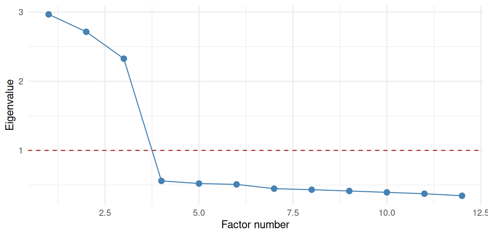

The last case study took a finished scale apart. This one does the opposite - it builds one from nothing, and shows why that is far harder than writing a few questions and adding them up. The project (McKnight, Kashdan, and colleagues) set out to measure political curiosity: the disposition to seek out, and sit with, political information and views - including those you find uncomfortable. There is no ready-made instrument for that. You have to construct one, and then earn the right to trust it.
NoteA note on the data
As in the previous chapter, the study’s real datasets are the authors’ own research collections and are not public. Every runnable illustration here uses simulated data built to expose the mechanics; the study’s actual findings are described in the text.
The build follows a discipline worth memorizing, because it is how every good measure in psychology is made: explore the structure, confirm it on fresh data, check it means the same thing for everyone, and predict something before you look.
30.1 Study 1 - Explore: How Many Things Are We Even Measuring?
You write a big pool of candidate items and collect responses. Now the first question: do these items measure one thing, or several? This is a job for Exploratory Factor Analysis (EFA) - a method that looks at how items correlate and infers the small number of hidden dimensions (“factors”) that could produce those correlations.
The workhorse decision - how many factors? - starts with the eigenvalues of the item correlation matrix. Each eigenvalue is the amount of variance one potential factor accounts for; the classic rules keep factors with an eigenvalue above 1 (they explain more than a single item’s worth) and look for the “elbow” in a scree plot. Watch it recover a structure we planted on purpose - twelve items secretly built from three factors:
NoteWorking in SPSS, Julia, or Python?
The code tabs below assume this chapter’s data is already loaded. Grab the one-file setup for your language from Getting the Book’s Data, run it once, then load what you need by name - this chapter uses ch28-curiosity. For example, book_data("ch28-curiosity") in R, Julia, or Python, or !bookdata name = "ch28-curiosity". in SPSS. Every language reads the same shipped files, so your numbers will match the ones printed here exactly.
library(tidyverse) # dplyr, ggplot2, purrr, tibble, readr, stringr, forcatssource("_common.R") # book-wide helpers: round2(), fmt_p(), tidy2()set.seed(2026)N <-500; load <-0.75factors <-list(F1 =rnorm(N), F2 =rnorm(N), F3 =rnorm(N)) # three hidden factorsmk <-function(f) load * f +rnorm(N, sd =sqrt(1- load^2))# four indicators per factor, twelve items in allitems <- factors[rep(c("F1", "F2", "F3"), each =4)] |>map(mk) |>set_names(paste0("item", 1:12)) |>as_tibble()ev <-eigen(cor(items))$values # eigenvalues of the correlation matrixtibble(factor_number =seq_along(ev), eigenvalue = ev) |>ggplot(aes(x = factor_number, y = eigenvalue)) +# Kaiser's "keep it if > 1" linegeom_hline(yintercept =1, linetype ="dashed", colour ="firebrick") +geom_line(colour ="steelblue") +geom_point(colour ="steelblue", size =2.5) +labs(x ="Factor number", y ="Eigenvalue") +theme_minimal()

A scree plot. Three eigenvalues stand above 1, then the scree falls to rubble — three factors.
* Twelve items built from three hidden factors, then the scree plot.
* (Assumes item1 to item12 are already the active dataset.)
FACTOR
/VARIABLES item1 TO item12
/EXTRACTION PC
/PRINT EIGEN
/PLOT EIGEN.
usingRandom, Distributions, Statistics, LinearAlgebra, DataFrames, PlotsRandom.seed!(2026)N, load =500, 0.75F = [rand(Normal(), N) for _ in1:3] # three hidden factorsmk(f) = load .* f .+rand(Normal(0, sqrt(1- load^2)), N)items =DataFrame([Symbol("item", i) =>mk(F[cld(i, 4)]) for i in1:12])ev =eigvals(cor(Matrix(items))) |> reverse # eigenvalues, largest firstplot(1:12, ev, marker =:circle, legend =false, xlabel ="Factor number", ylabel ="Eigenvalue")hline!([1], linestyle =:dash, color =:firebrick) # Kaiser's "keep it if > 1"
import numpy as np, pandas as pdimport matplotlib.pyplot as pltrng = np.random.default_rng(2026)N, load =500, 0.75F = [rng.normal(size=N) for _ inrange(3)] # three hidden factorsmk =lambda f: load * f + rng.normal(0, np.sqrt(1- load**2), N)items = pd.DataFrame({f"item{i+1}": mk(F[i //4]) for i inrange(12)})ev = np.sort(np.linalg.eigvals(items.corr()).real)[::-1]plt.plot(range(1, 13), ev, marker="o", color="steelblue")plt.axhline(1, linestyle="--", color="firebrick") # Kaiser's "keep it if > 1"plt.xlabel("Factor number"); plt.ylabel("Eigenvalue")plt.show()
# how many factors the data suggesttibble(factors_above_1 =sum(ev >1))
factors_above_1
3
* How many factors the data suggest: count the eigenvalues above 1.
* SPSS reports this directly in the FACTOR output above - the number of
* components retained under the default Kaiser (eigenvalue > 1) rule.
count(>(1), ev) # how many factors the data suggest
(ev >1).sum() # how many factors the data suggest
Three, exactly as planted. The real study did this on its item pool and found a coherent multi-dimensional structure of political curiosity. In practice you would rotate and interpret the factors with a dedicated tool:
# The real EFA (needs the psych package — shown, not run here)library(psych)fa.parallel(items) # parallel analysis: a better "how many factors?" than Kaiser aloneefa <-fa(items, nfactors =3, rotate ="oblimin") # extract & rotate to interpretefa$loadings # which items load on which factor
But finding a structure in your data is the easy part. Any rich enough dataset will hand you a tidy factor solution if you go looking. Remember that fitting the past is not the same as predicting the future. The real test comes next.
30.2 Study 2 - Confirm: On Data You Have Not Seen
The cardinal rule that separates measurement from wishful thinking is straightforward: you do not confirm a structure on the same data that suggested it. EFA is exploratory, and it will always find something. To believe the structure is real, you fit it as a fixed hypothesis to a new, independent sample using Confirmatory Factor Analysis (CFA), and ask whether the pre-specified model actually fits.
# The real CFA on Study 2's fresh sample (needs lavaan — shown, not run here)library(lavaan)model <-' curiosity =~ item1 + item2 + item3 + item4 tolerance =~ item5 + item6 + item7 + item8 engagement =~ item9 + item10 + item11 + item12'fit <-cfa(model, data = study2_data)fitMeasures(fit, c("cfi", "tli", "rmsea", "srmr"))
CFA does not ask “what structure is here?” - it asks “does this structure hold?” and answers with fit indices you judge against conventional standards (Hu & Bentler): CFI and TLI ≥ .95, RMSEA ≤ .06, SRMR ≤ .08. The political-curiosity model met those standards on the independent Study 2 sample - which is what earns the measure the right to be used. Explore once, confirm elsewhere; a structure that survives a fresh sample is a structure worth believing.
30.3 Does the Ruler Mean the Same Thing for Everyone?
Before you compare groups on a measure - do liberals and conservatives differ in political curiosity? - you must first check that the measure means the same thing in both groups. If “curiosity” items behave differently for conservatives than for liberals, then a group difference in scores might be an artifact of the ruler, not a real difference in the trait. This is measurement invariance, tested with multi-group CFA that progressively constrains the model to be equal across groups:
# Measurement invariance across political groups (lavaan — shown, not run here)configural <-cfa(model, data = dat, group ="conservative") # same shape?metric <-cfa(model, data = dat, group ="conservative",group.equal ="loadings") # same loadings?scalar <-cfa(model, data = dat, group ="conservative",group.equal =c("loadings", "intercepts")) # same intercepts?anova(configural, metric, scalar) # does constraining hurt fit? if not, invariance holds
The study ran exactly this before comparing political groups - because a group comparison on a non-invariant scale is comparing inches to centimeters and calling the difference meaningful. It is the same lesson the depression study learned the hard way: make sure two measurements are on the same footing before you read anything into their difference.
30.4 Preregister: Call Your Shot Before the Data Arrive
With the measure built and validated, the team turned to a prediction: an “optimal distinctiveness” intervention would raise political curiosity. And here they did one of the most credibility-earning things you can do in empirical science - they preregistered: wrote down the hypothesis, the design, the sample size, and the exact analysis before collecting a single response, and time-stamped it publicly (Studies 3 and 4 carry preregistrations in the project’s OSF archive).
ImportantWhy preregistration is the same idea as the accountability pledge
Recall the Sports Page rule: fitting the past is easy, so the only honest test is predicting the future and admitting when you were wrong. Preregistration puts that rule on the record. Without it, a researcher who peeks at the data can, consciously or not, tune the hypothesis and the analysis until something is “significant,” fitting the past and calling it a discovery. Preregistration ties your hands before you see the outcome, so a confirmed prediction actually means something. It turns a study from “we found a pattern” (description dressed as discovery) into “we predicted it, and it happened” (a real forecast that could have failed). A preregistered study that fails is worth more than an unregistered one that “succeeds.”
The confirmatory, preregistered tests - including a mediation analysis asking why the intervention worked (through what psychological mechanism) - are the payoff of the whole arc. But note the order: the measure had to be built and trusted (Studies 1–2) before any intervention result meant anything. You cannot detect a change in a thing you cannot yet measure.
30.5 What This Case Teaches
Measures are built, not assumed (reliability, validity): a sum of items is a hypothesis about structure, and the hypothesis has to be earned.
Explore, then confirm - on fresh data. EFA finds a structure; CFA on an independent sample tests whether it was real. Confirming on your exploration sample is the past cheating again.
Check invariance before you compare groups. A difference on a non-invariant scale can be an artifact of the instrument.
Preregistration turns a pattern into a prediction (Ch. 23): call your shot before the data, and a hit finally counts.
The final case study takes on the messiest reality of all - the data you didn’t get - and asks whether the holes in a dataset can quietly change the answer.